球谐系数与球面高斯
尽量不用各种术语来讲清楚球谐(Spherical Harmonics)系数，以及的一些应用。
SH意指球谐函数，归根到底只是一组“基函数”，球谐系数就是这组基函数的系数。
# 基函数
所谓“基函数”就是一组可以组成任意函数的分量。比如
比如泰勒展开以多项式函数系{1,x−x0,(x−x0)2,(x−x0)3,…,yn=(x−x0)n,…}为基函数， 在对函数f(x)的泰勒展开中：
f(x)=0!f(x0)+1!f′(x0)(x−x0)+2!f′′(x0)(x−x0)2+⋯+n!f(n)(x0)(x−x0)n+⋯=n=0∑∞n!f(n)(x0)(x−x0)n
{0!f(x0),1!f′(x0),2!f′′(x0),…,n!f(n)(x0),…}就是这组基函数的系数。
又比如傅里叶变换以三角函数系{1,sin(ωx),cos(ωx),sin(2ωx),cos(2ωx),sin(3ωx),cos(3ωx),…,sin(nωx),cos(nωx),…}作为基函数，在对函数f(x)的傅里叶展开中：
f(x)anbn=2a0+n=1∑∞(ancos(nωx)+bnsin(nωx))=2a0+a1cos(1ωx)+b1sin(1ωx)+a2cos(2ωx)+b2sin(2ωx)+⋯+ancos(nωx)+bnsin(nωx)+⋯=T2∫0Tf(x)cos(nωx)dt=T2∫0Tf(x)sin(nωx)dt
{2a0,a1,b1,a2,b2,a3,b3,…,an,bn,…}就是这组基函数的系数。
有了基函数，就可以把任意一个函数，描述成几个基函数的加权和了。 当基函数用的个数越多，和原始函数本身也就越接近。
这里用的是二维直角坐标系下的函数y=f(x)举例，而拓展到极坐标系函数r=f(θ)也有多种基函数。 再扩展到三维坐标系下，函数函数z=f(x,y)表示一个平面，同样有二维傅里叶级数等二维基函数；而三维极坐标系即球面坐标系函数r=f(θ,ϕ)对应的则通常是一个凹凸不平的球面（半径r随方向角(θ,ϕ)变化且方向角范围为[−π,π]），也同理可以用一系列基函数近似表示，这些基函数称为“球面基函数”。
而球谐函数(Spherical Harmonics)就是最有名的球面基函数。球谐函数有很多很好的性质，比如正交性，旋转不变性，就和傅里叶级数里的基函数一样完美。
# 球谐系数
一般我们把球谐函数记为Ylm：
Ylm(θ,ϕ)=⎩⎪⎪⎪⎨⎪⎪⎪⎧2Klmcos(mϕ)Plm(cosθ)2Klmcos(−mϕ)Pl−m(cosθ)Kl0Pl0(cosθ)(m>0)(m<0)(m=0)
其中，l∈N称为球谐函数的“次数”、m∈Z,m∈[−l,l]称为球谐函数的“阶数”、 Klm是一个缩放系数，和归一化有关：
Klm=4π2l+2⋅(l+∣m∣)!(l−∣m∣)!
Plm(⋅)为勒让德多项式，是勒让德微分方程的解：
(1−x2)dx2d2P(x)−2xdxdP(x)+n(n+1)P(x)=0
上述方程及其解函数因法国数学家阿德里安-马里·勒让德而得名。勒让德方程是物理学和其他技术领域常常遇到的一类常微分方程。当试图在球坐标中求解三维拉普拉斯方程（或相关的其他偏微分方程）时，问题便会归结为勒让德方程的求解。
此处出现勒让德多项式的主要原因是因为勒让德多项式的正交性，它的正交性给球谐函数带来了正交性，使其成为和三角函数系一样完美的基函数系。
球谐函数的各基函数化成图长这样：
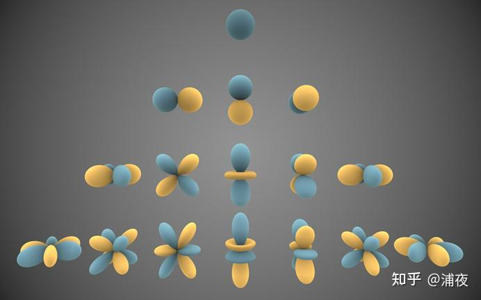
其中蓝色表示Ylm(θ,ϕ)值为正数，黄色表示Ylm(θ,ϕ)值为负数，从上到下次数增大，从左到右阶数增大：
第一次看完表达式之后的心情一般如下
其实退化到二维来看，还是很简单的，二维的SH差不多长这样，蓝色表示Ylm(θ,ϕ)值为正数，黄色表示Ylm(θ,ϕ)值为负数：
（具体系数不太准确仅用于示意...）
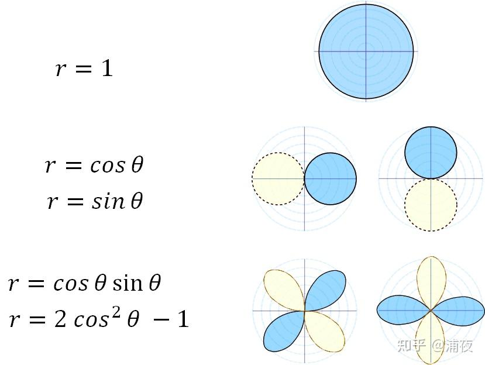
像这样是不是就特别简单了，em，看这个波瓣长得似乎有点三维SH的意思了嘛。
（可以思考一个小问题：为啥二维情况下第三排的基函数只有cos平方，没有sin平方呢？）
假如有一个极坐标的函数长这样：
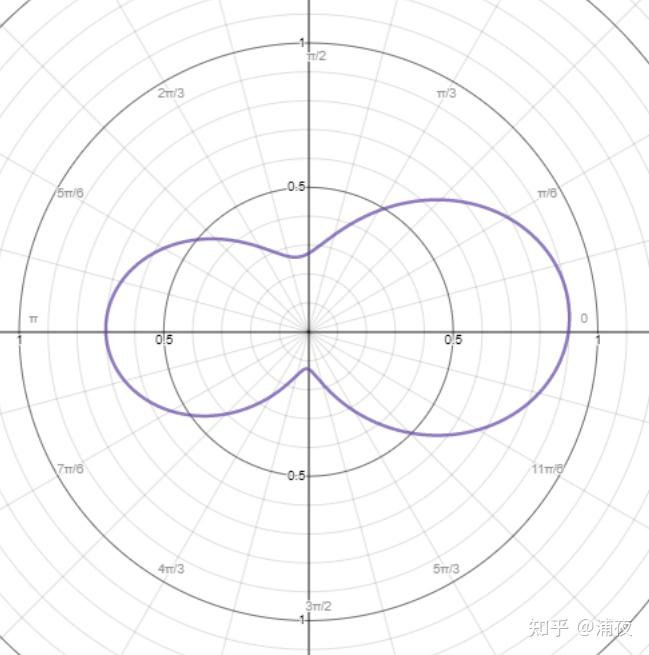
他可以表示为
r=0.5+0.1cosθ+0.07sinθ+0.05cosθsinθ+0.3(2cos2θ−1)
只记球谐系数，这个函数就表示为0.5,0.1,0.07,0.05,0.3。
回到三维的情况这几个数字其实就是SH系数啦。
当SH的系数用的越多，那么表达能力就越强，跟原始的函数就越接近：
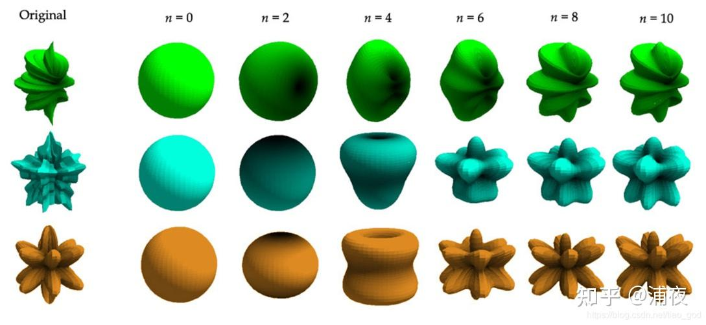
# 球谐系数的图形学应用
在图形学中，球谐函数通常用来记录某个值在球面上的分布，比如光照情况或颜色分布等。
例如，用平面来表示的一球坐标系函数r=f(θ,ϕ)可能长这样：
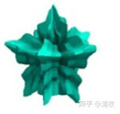
用r表示亮度的话就是一个球体上的高光：
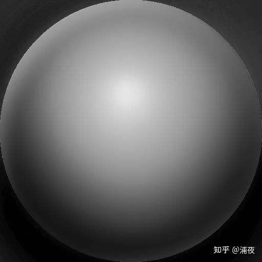
同理，三个球坐标系函数也可以用来表示球面上不同位置有不同的颜色。 而理论上任意的球坐标系函数都可以分解成球谐函数之和，所以只要记下了球谐系数等于记下了球面上的光照情况。
此外，球谐函数还可用于记录空间中某个点从不同方向看过去的不同颜色，这在点云渲染中非常有用，3D Gaussian Splatting就是用球谐函数记录空间中的Gaussian点在不同方向的颜色。
实际应用中的球谐函数基函数一般只用到二阶或三阶。 二阶是4个系数，拓展到rgb，每个颜色通道一个系数，就是4 * 3 = 12个系数。 三阶是9个系数，拓展到rgb就是9 * 3 = 27个系数。
为啥不用更高阶的SH？一方面是因为更多的系数会带来更大的存储压力、计算压力，而一般描述变化比较平滑的环境漫反射部分，用3阶SH就足够了；另一方面则是因为SH的物理含义不是特别好理解，高阶SH容易出现各种花式Artifact，美术同学一般都会认为这种表现属于bug。
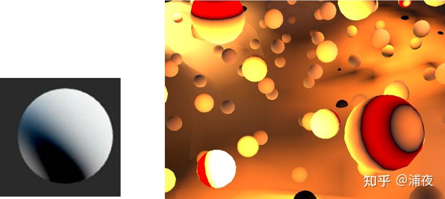
那有没有更直观物理含义更好理解的基函数的？也有的，比如SG
# 球面高斯（Spherical Gaussian）
球面高斯是不同于球谐函数的另一种球面基函数。大家小学三年级学过概率和统计的话，对正态分布或者高斯分布一定非常了解
g(x)=σ2π1e(2σ2−(x−μ)2)
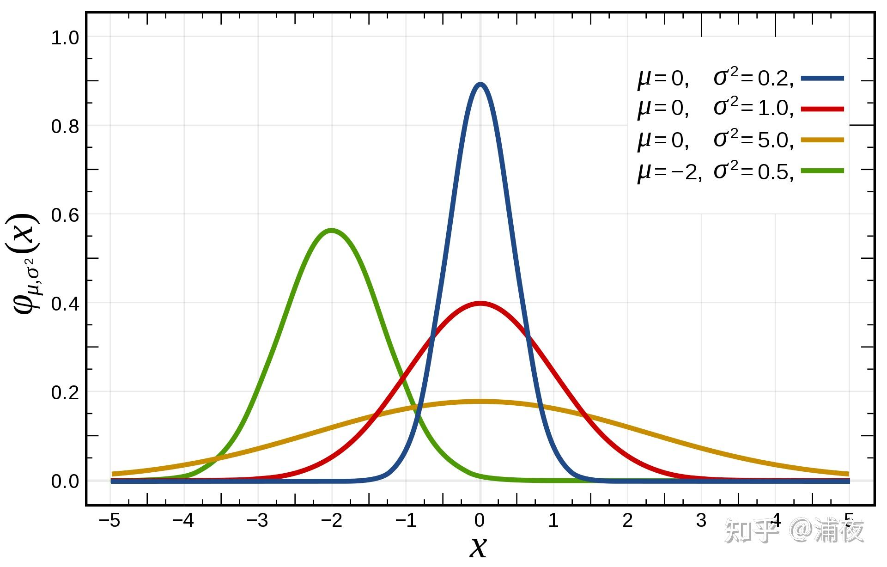
拓展到球面也很简单。相比SH的公式，Spherical Gaussian的公式就简单的多了，形如
G(v;μ,λ,a)=aeλ(μ⋅v−1)
二维图像长得像这样
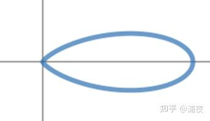
参数的物理含义也很好理解，a表示波瓣的大小，μ表示波瓣的中心方向，λ表示波瓣的胖瘦 和SH定死的基函数相比，SG的特点就是自由度极高：基函数用几个、怎么分布、胖瘦如何，都随意。当然这也对设计基函数的人提出了更高的要求，否则可能花费很多效果又不好。和别的基函数一样，用的基函数个数越多，表达能力就越强。一般一套SG基函数包含多个不同方向的基函数，例如这样：
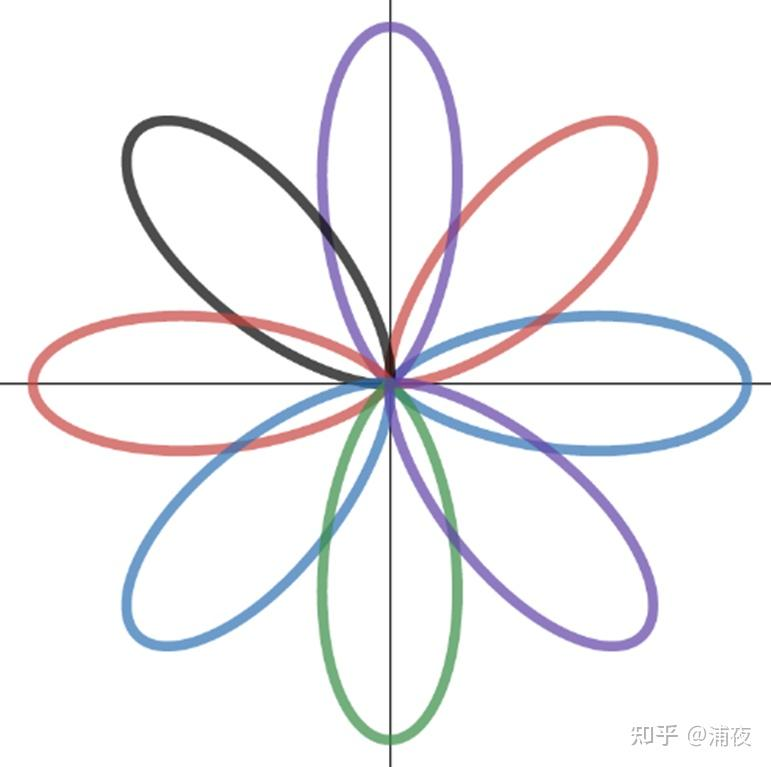
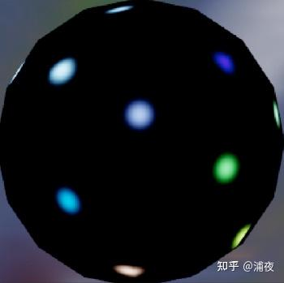
SG基函数和镜面反射计算的结果又比较接近，因此可以用来描述高光。
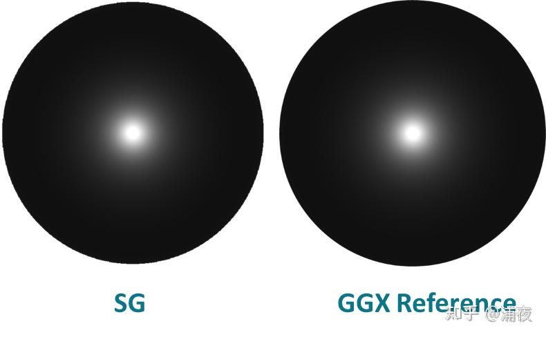
SG有这么多好处，又简单又好理解的，还没有高阶SH那些乱七八糟的Artifact，那谁还用SH啊。 然而SH也有很多长处是SG没有的，比如SH除了正交性还有旋转不变性。还是举个例子来说明： 假如有两个SH基函数（蓝色和红色），我想要用这两个基函数描述另一个和基函数形状一样的函数（紫色）
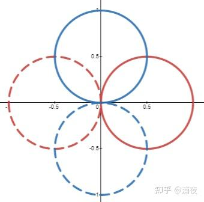
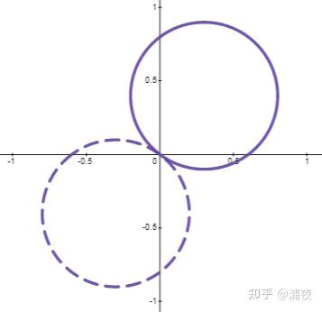
很方便的可以用两个基函数的加权得到（系数是0.8和0.6） 那假如是SG的两个基函数（红色和蓝色）想描述黑色的这个函数结果呢
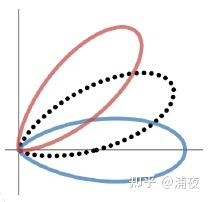
却发现怎么调整系数，都接近不了这个目标性状。最接近的系数的重建结果是下图紫色爱心形。
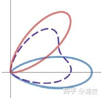
反馈到实际高光计算上，就会发现SG不能很好地保持高光形状。基函数定义方向上的高光形状能保持的比较好，但如果位置在几个基函数的角度之间，高光形状就会比较散了。 教团的文章就是使用SG来描述高光，每个基函数都用一套Lightmap。看起来高光变形的问题应该也不明显。
虽然我觉得这个思路过分奢侈，不过还是很有启发性的。 其实真正描述光照漫反射，SG倒不多见，比较受美术欢迎的是Ambient Cube（也叫HL2），每个方向一个强度描述：
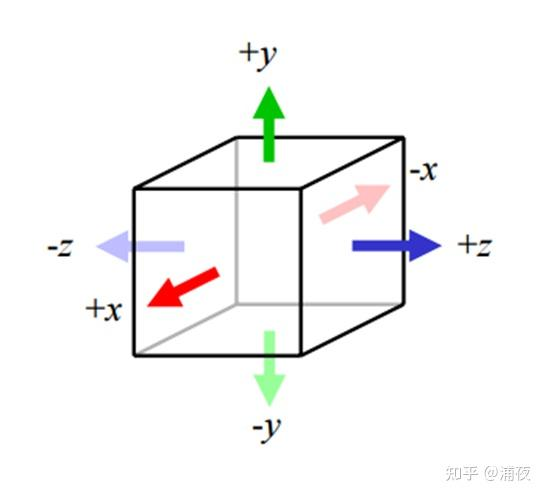
退化到二维大概长这样
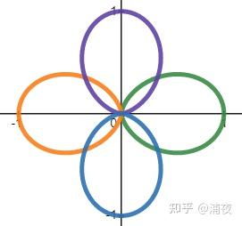
函数形状和性质与SG非常相像（表达式其实不一样） 为什么受美术欢迎呢？因为它的物理含义非常好理解，哪里想改调哪里。用SH的基函数描述漫反射的同学多多少少碰到过这样的抱怨：y方向怎么就黑不下来呢！底下应该是全黑的啊！但ambient cube就不会了，想要把某个方向改成纯黑，只要把对应方向的系数改成0就行了。 从系数个数上来对比，一般常用的是这几种：二阶SH是4个系数，AmbientCube是6个系数，三阶SH是9个系数。 参考链接： https://blog.selfshadow.com/publications/s2015-shading-course/rad/s2015_pbs_rad_slides.pdf https://mynameismjp.wordpress.com/2016/10/09/sg-series-part-2-spherical-gaussians-101/